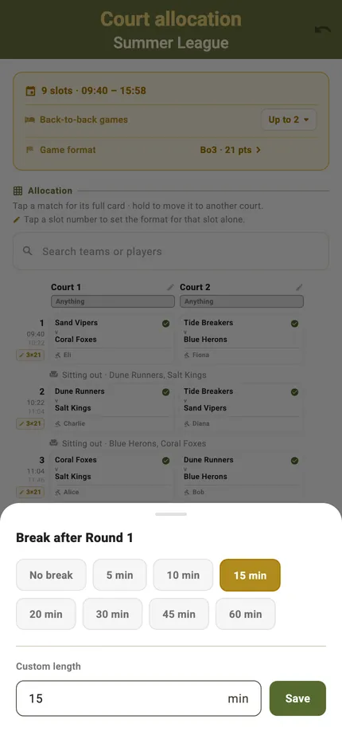
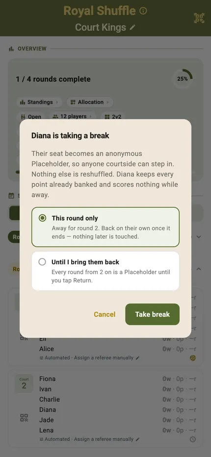
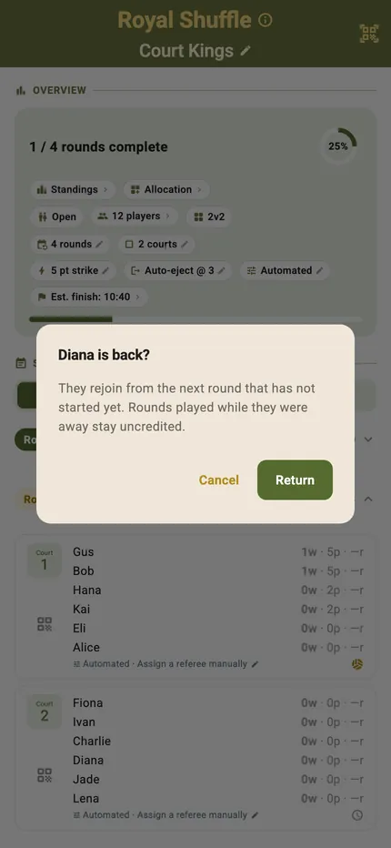
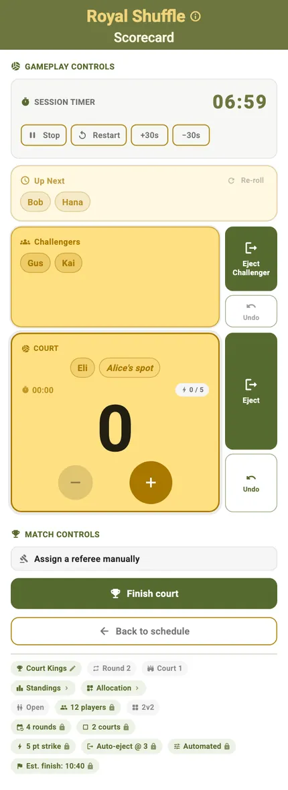
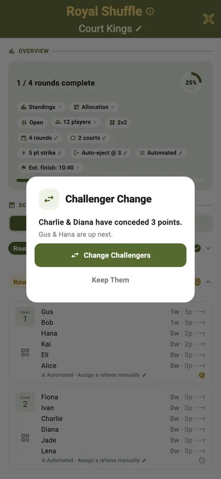
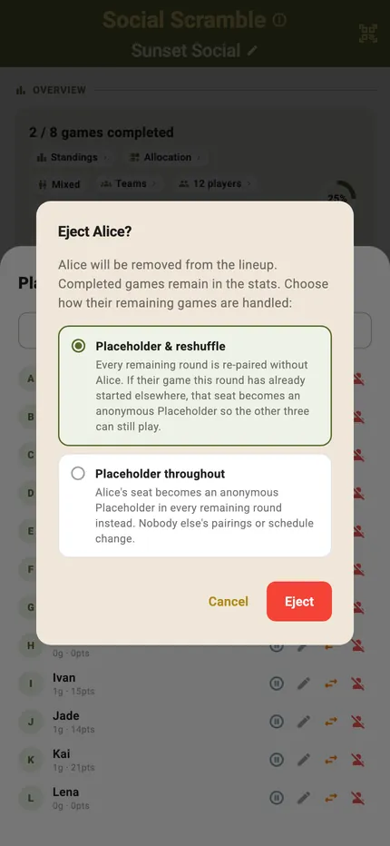
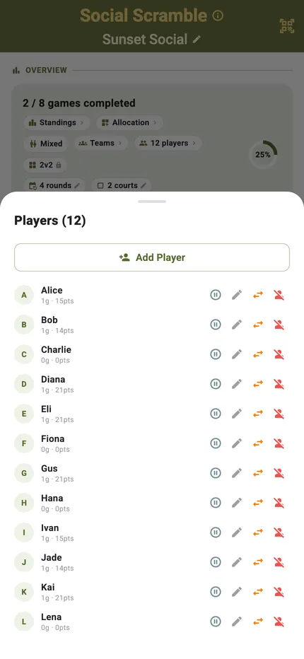

Live Tournament

A tournament on paper assumes everyone who signed up turns up, stays fit and leaves at the end. Real sessions do none of that: people arrive late, roll an ankle, take a call, or have to go at six.
These are the controls for the middle of a session — pausing a player, bringing them back, standing someone in, taking someone out — designed so that using them does not corrupt the results already recorded.
Best for
- Drop-in sessions where the player list changes as the evening goes on
- Organisers who have had to redraw a schedule by hand mid-event
- Anyone running a session while also playing in it
Sitting a round out
A break is not the same as leaving. TournaQ keeps a player's place and their points, and puts them back where they were.
Choose who, and for how long
Pick the player and whether they are out for this round only or until you bring them back. Everything they have already banked stays with them.

What happens to their seat
Their spot becomes an anonymous placeholder so anyone courtside can step in, and nothing else is reshuffled — the rest of the draw is untouched.

Bringing them back
Return them and they slot back into the rotation. Nobody else's position moves, and the schedule does not have to be rebuilt.

Someone steps in
An open seat should not stop a court. Somebody courtside can take it for the round.

A stand-in on a live court
The placeholder left by a break or an ejection can be filled by whoever is available, so the round runs on time instead of playing three against four while you find somebody.

Changing the challengers
In the rotation formats, the pair due on next can be swapped by hand — for the player still tying a shoelace, or the one who has just walked in.
Someone has to leave
The hard case. A player going home mid-session has to be handled without invalidating the evening so far.

Two ways to absorb it
Re-pair the remaining rounds without them, or leave their seat as a placeholder so nobody else's pairings move. TournaQ asks which you want rather than choosing for you, because the right answer depends on how much of the session is left.
Either way, the games they have already played still count towards the ranking.

The player list is the control panel
Everyone in the session with their games and points, and on each row the four things you need mid-evening: pause, rename, swap, remove.
What is live, and what is coming
Mid-session controls ship today. Multi-device sync and spectator views are the next step.
-
Planned
Multi-device sync
Keep match data in sync across multiple devices at the same event — so scorekeepers and organisers always see the same state.
-
Planned
Live court score display
A consolidated view showing current scores across all active courts — updated in real time as scorekeepers enter points.
-
Planned
Real-time standings
Group standings and bracket positions update automatically as match results come in, without manual entry or refresh.
-
Planned
Spectator view
A read-only view of live scores, standings, and match schedules accessible to spectators — no account or app required.
-
Planned
Public tournament URL
Each event gets a shareable URL that spectators, players, and coaches can open on any device to follow the tournament live.
-
Planned
Live bracket visualisation
An interactive bracket diagram that updates live as matches complete — shareable with teams and displayable on venue screens.
Running into a mid-session situation TournaQ does not handle? Tell us what happened.